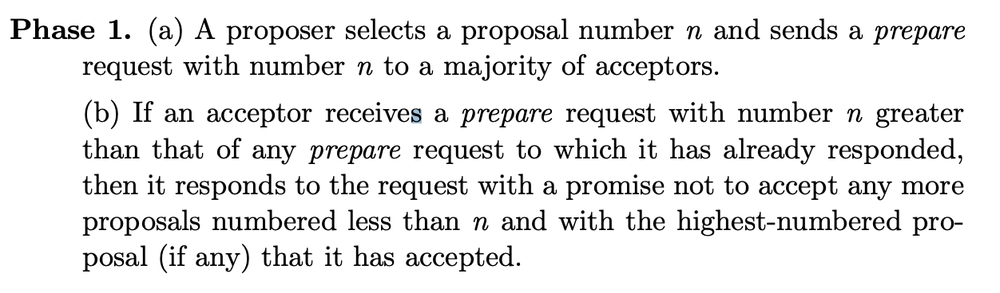
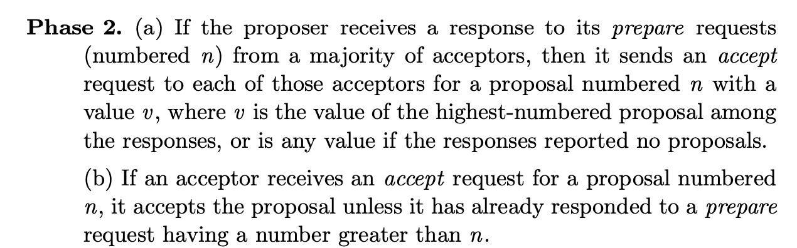
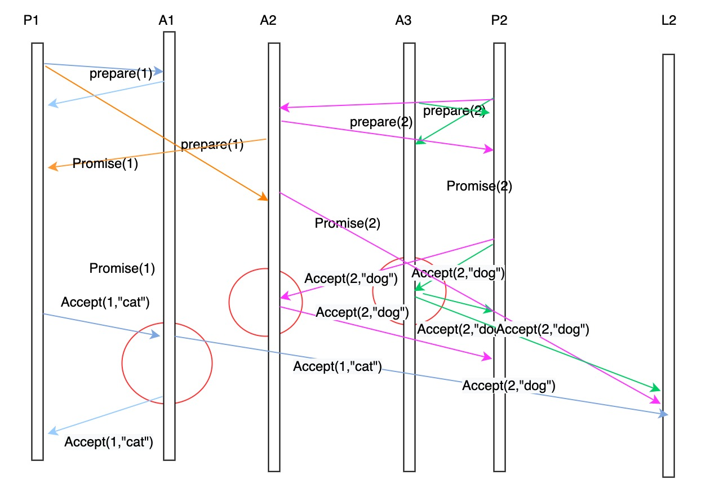
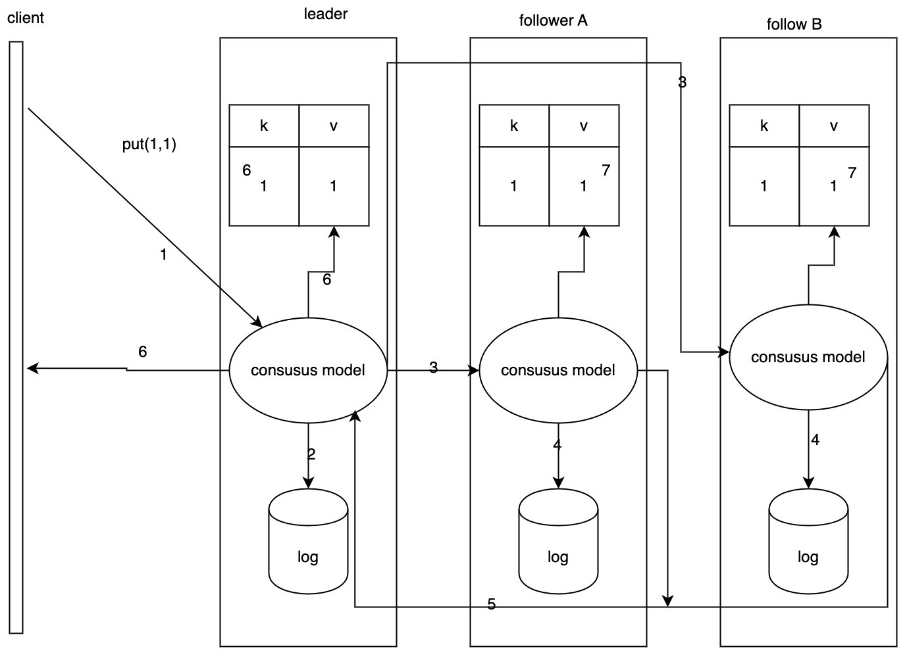

浅浅学习分布式算法
Paxos
Paxos是一个共识(consensus)算法，共识算法解决的是分布式系统对某个提案（Proposal），大部分节点达成一致意见的过程。 保证最终只有一个提案会被选定，提案被选定后进程也可以获取到被选定的提案。
前提
假设不同参与者可以通过发送消息来通信，并使用普通的非拜占庭模式的异步模型，即每个参与者以任意速度执行，可能会出错而停止，也可能会重启,消息在传输中可能会花费任意的时间，可能会重复、丢失，但不会被损坏，即其内容不会被篡改，不会发生拜占庭式问题。
拜占庭将军问题：某国有许多军队，军队的将军需要制定一个统一的行动计划—进攻或撤退。将军们地理位置是分开的，只能靠通讯员通信，将军中存在叛徒，叛徒可以篡改消息，欺骗将军。~~理论研究显示，在3n+1的系统中，只有叛徒数目小于等于n，才有可能设计一个协议使得叛徒无论怎样作梗也能达成一致。~~即分布式计算中系统中的成员计算机可能出错而发送错误的信息，用于传递信息的通讯网络也可能导致信息损坏，使得网络中不同的成员关于全体协作的策略得出不同结论，从而破坏系统一致性
Paxos算法假设所有信息都是完整的，没有被篡改和伪造。
主要术语
-
Proposer：提案者
-
Proposal：提案，由Proposer提出，一个提案由一个编号及value形成的对组成，编号是为了防止混淆，保证提案的可区分性，value代表提案本身的内容。提案的含义在分布式系统中十分宽泛，如多个事件发生的顺序、某个键对应的值、谁是主节点……等等。可以认为任何可以达成一致的信息都是一个提案。
-
Acceptor：提案的受理者，被动接受来自Proposer的提议，有权决定是否接受该提案。
-
Choose：被选定的提案，当有半数以上Acceptor接受该提案，就认为提案被选定。
-
Learner：被动接受来自Acceptor的消息，需要知道被选定的提案信息。
假设有一组可以提出提案的进程集合，一个一致性算法需要保证以下三点：
-
被提出的提案只有一个会被选定
-
如果没有提案被提出，就不会有被选定的提案。
-
当一个提案被选定后，进程可以获取被选定的提案信息。
安全性原则
安全性是指那些需要保证永远都不会发生的事情，
-
只有被提出的提案可以被选定
-
只能有一个value被选定
-
如果某个进程认为某个提案被选定了，那么这个提案必须是真的被选定那个。
存活原则
存活是指那些最终一定会发生的事情
-
最终会批准某个提案的value
-
一个value被批准了，其他服务器最终会学习到这个value
Basic Paxos
Paxos一致性算法分为两阶段提交：prepare阶段和Acceptor阶段
Prepare阶段
阶段 a：proposer选择一个提案编号n，并将携带编号n的prepare请求发送给大多数的Acceptor。
阶段b：Acceptor收到Prepare消息后，如果提案编号大于它已经回复的所有prepare消息，Acceptor回复给Proposer一个promise消息，承诺不再接受小于n的提案。promise携带acceptor接受过的最大的编号。
Acceptor阶段
阶段a: 如果proposer从大多数acceptor中接收到对prepare请求的回复，它将向这些acceptors发送一个编号为n，value为v的accept请求，v是这些回复中最高编号的提案，或者响应报告中没有提案，v是任意值。
阶段b: 如果一个acceptor收到了编号为n的acceptor请求，它会接受该提案。除非已经回复过编号大于n的prepare请求。
示例

-
P2分别向A2 A3发送序号为2的prepare请求，A2 A3之前没有接受过序号更大的prepare消息，因此会向P2返回一个序号为2的promise请求。
-
P1分别向A1 A2发送序号为1的prepare请求,A1之前没有接受过序号更大的prepare消息，因此会向P1返回一个序号为1的promise请求。而A2已经接受过序号为2的，因此会忽略P1的prepare请求。
-
P1为了将提案达成共识，会发送一个Acceptor请求，携带编号和value。
-
P2为了将提案达成共识，会发生Acceptor请求，携带编号和value。
-
A1会将共识发送给L1，并回复P1。
-
A2 A3 会将共识发送给L1，并回复P2。
活锁问题

P1提交的Proposal被拒绝时，可能存在因为Acceptor承诺返回了更大编号的Proposal，P1提高Proposal编号继续提交。一旦出现这种情况，两个Proposer都发现自己的编号过低转而提出更高编号的Proposal，这会导致死循环，该现象被称为活锁。你编号高，我再比你更高，反复如此，算法永远无法结束。
对于Basic Paxos来说，具有活锁问题，每次只能对单个提案形成决议，而决议的形成至少需要两次网络请求和应答，如果每个命令都需要通过Basic Paxos算法达到一致，会产生大量开销。 Basic Paxos的价值在于开拓了分布式共识算法的发展思路，但无法直接用于实践，只能作为学术研究。但是正如Mike Burrows所说，”There is only one consensus protocol, and that’s “Paxos” — all other approaches a re just broken versions of Paxos“，许多实际应用的分布式算法如Raft、ZAB等都是基于Basic Paxos的改进。
multi Paxos的核心改进是增加了选主过程，而对于选主过程，其实是对“谁来当主节点”的共识。这里主要讲述Paxos的思想，对这些不再阐述。
Raft
Raft算法对问题进行分解，分为“Leader Election”、“Safety”、“log compaction"。思想上采用投票选举，遵从少数服从多数的原则。

主要角色
Leader：领导者，主节点，负责协调和管理其他从节点。集群中只有一个leader，leader处理客户端的所有请求。
Candidate：候选者，集群中每个节点都可能成为候选者，候选者才有可能被选为领导者
Follower：跟随者，不可以发起选举。
term: 任期，raft把时间切分为任意长度的任期，任期是连续的整型数。每个服务器节点存储当前的任期，任期会随着时间递增。任期信息随着节点的通信而传递：如果当前服务器存储的任期小于其他服务器存储的任期，那就会更新该节点的任期信息为较大值。如果candidate或leader发现任期out of date,会立即转换为follower。
Leader election
raft使用心跳机制触发选主。集群初始化时节点都是follower。leader会定期向follower发送心跳。如果follower超过一定时间仍未收到心跳，即election timeout,此时会认为没有可用的leader，开始选举新leader。
选举前，follower增加当前任期，并成为candidate。当收到集群中大多数节点的投票时，candidate在选举中胜出。一个节点最多只能投票给一个candidate，秉承着先来先投的原则。少数服从多数的原则保证最多一个candidate可以在投票中取胜。获胜的candidate作为leader，向其他follower发送心跳包。
candidate在选举时如果发现存在leader且leader的任期至少和candidate的一样大，candidate将承认该leader是合法的，并返回follower状态。
存在一种情况，投票中没有candidate胜出：如果过半follower同时变为candidate，选票会被平均，没有candidate收到大多数的投票。如果发生该情况，每个candidate会增大自己的任期并重启一轮选举。不过，raft也使用其他措施来减少该情况的发生：每个follower的election timeout是固定范围的随机数。
Log replication
每个客户端请求 包含被复制状态机(replicated state machine)执行的命令。leader将命令作为一个新的Entry追加到log，之后通过rpc调用使其他服务器节点复制该entry。当entry被安全的复制后，leader会在存储机中应用该entry，并响应客户端。被存储在state machine的log entry包含leader收到entry的任期和表明在log中位置的索引。
leader决定什么时候应用entry到存储机(state machine)是安全的，此时entry被称为committed。一旦follower获知entry被应用，就会将entry应用在自己的state machine。raft确保commited是持久化的，并被所有state machine应用。

- 客户端发起请求,put(1,1)
- leader收到请求，将信息复制到replicated state machine
- leader并发请求其他follower同步该entry
- follower将entry复制到replicated state machine，响应leader
- 当大多数follower都成功复制，leader在state machine应用该entry，并响应客户端。
- 当follower通过心跳信息得知entry被leader成功应用，也会在本机应用entry。
Safety(待办)
Reference
维基百科中对于Paxos的解释：zh.wikipedia.org/wiki/Paxos%…
talkgo聊paxos的笔记：github.com/vision9527/…
talkgo聊paxos：www.bilibili.com/video/BV1C5…
lamport.azurewebsites.net/pubs/paxos-…
raft论文：https://raft.github.io/raft.pdf
大佬解析raft：https://zhuanlan.zhihu.com/p/27207160